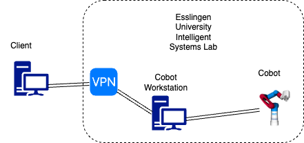

Quickstart Guide¶
Follow the instructions below to plan and execute trajectories in simulation or on the real Cobot.
Common Steps¶
1. Clone this Repo¶
git clone https://github.com/robgineer/cobot.git cobot
cd ~/cobot
2. Install docker¶
The entire dev. environment is based on a docker container. If you running Ubuntu and you don't have docker installed, run the following script.
./scripts/docker_installation.sh
3. Choose your GUI¶
We offer two different options for displaying the graphical user interface: xpra or VNC. Both are different and have their specific use cases.
- The VNC option enables viewing an entire Ubuntu Desktop within your browser. Useful in case you are running this project on a local machine. Refer VCN setup for details and configuration.
- The xpra option enables forwarding single X11 windows from your terminal. Its a bit more lightweight and useful if you are running this project on a remote machine. It requires your user to be ported into the docker container, however. This might not work on all configurations. Refer Xpra setup for details and configuration.
Once you have configured your preferred GUI type, proceed with either the simulation or real control steps.
Simulation¶
1. Build the project¶
source /opt/ros/jazzy/setup.{bash/zsh}
cd ~/cobot
colcon build --merge-install --symlink-install --cmake-args "-DCMAKE_BUILD_TYPE=Release" --packages-select cobot_model cobot_moveit_config demo py_demo
source install/setup.{bash/zsh}
Colcon build options explained¶
merge-install: Do not create separate install folders for each package bur merge everything into one.
symlink-install: Do not copy built files into the install folders but create a symlink. Changes in Python files, for example, take effect immediately (no re-building required).
cmake-args "-DCMAKE_BUILD_TYPE=Release": Optimize build for speed
--packages-select cobot_model cobot_moveit_config demo py_demo: We only need these packages for a simulation.
2. Launch Moveit2 and ROS2 Control¶
Option A: Fake Controls¶
This is an rviz only setup that enables to visualize Cobot motions based on fake controls; omitting any physics.
ros2 launch demo rviz_demo_launch.py
Option B: Gazebo Controls¶
This setup enables to visualize requested trajectories in rviz and in Gazebo. The Gazebo part will consider physical characteristics of the model such as mass and inertia.
ros2 launch cobot_moveit_config gz_demo_launch.py
3. Control the Cobot in Simulation¶
You can either drag the Cobot's end effector in rviz to a preferred position via the MoveIt2 motion planning plugin and execute the resulting trajectory or run a demo. Example:
ros2 run demo simple_ik
or (fake controllers only)
ros2 run py_demo simple_ik_fk
Real Cobot Control¶
Setup overview:

1. Pull submodules¶
In order to manipulate the Cobot in ROS2, connect to HS-Esslingen VPN, log in into the dedicated workstation for the Cobot and run
source /opt/ros/jazzy/setup.{bash/zsh}
cd ~/cobot
git submodule init src/cobot_hardware src/realsense-ros
git submodule update src/cobot_hardware src/realsense-ros
to pull the submodules.
Build with:
colcon build --merge-install --symlink-install --cmake-args "-DCMAKE_BUILD_TYPE=Release" --packages-skip moveit_task_constructor
=> build everything except of the moveit_task_constructor (not required for the basic tasks).
Don't forget to source
source install/setup.{bash/zsh}
Note if you are not connected to the HS-Esslingen VPN, the cobot_hardware submodule will not be cloned and you will not be able to control the Cobot via MoveIt2 / ROS2.
2. Launch Moveit2 and ROS2 Control¶
Launch rviz_demo_launch.py with controller_type:=real and enable_realsense_camera:=true
ros2 launch demo rviz_demo_launch.py controller_type:=real enable_realsense_camera:=true
3. Control the Cobot¶
Same as in simulation, you can either drag the Cobot's end effector in rviz to a preferred position via the MoveIt2 motion planning plugin and execute the resulting trajectory or run a demo. Example:
ros2 run demo simple_ik
How to handle rogue grippers¶
Once activated, the vacuum system remains active; even if the cobot is shut down physically (the red emergency button on the cobot table). In order to deactivate the vacuum system, run
ros2 run cobot_hardware gripper_off